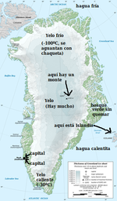

De: La Frikipedia, la enciclopedia extremadamente seria.
De: La Frikipedia, la enciclopedia extremadamente seria. De: La Frikipedia, la enciclopedia extremadamente seria.
| De la serie Países del planeta tierra: | |||||
| Groñenlandia | |||||
|---|---|---|---|---|---|
| |||||
| Lema: Tenemos calor a -30ºC | |||||
| Himno: Queremos al Monstuo del Lago Ness para nosotros
| |||||
| 
| |||||
| Capital | Nuuk | ||||
| Mayor ciudad | Sermersooqhyvjhvh | ||||
| Lenguas oficiales | Groenlandés, Danés, Osezno y Lapón | ||||
| Gobierno | Comunidad Autónoma (te suena?) | ||||
| Presidentk dein parlamentk dein Kalaallit Nunaat (como haya acertado doy una fiesta) | Kuupik Kleist | ||||
| Área | Arriba | ||||
| Población | 50.000 tipos | ||||
| Moneda | Corona danesa (en proceso de "Republicacización") | ||||
| Zona horaria | GMT (como en Canarias) en un lado, en el otro (el de las cabezas del ratón) GTM+4 | ||||
| Dominio Internet | .gl (No es galicia, tranquilo) | ||||
| Código telefónico | doscientosnoventaynueve
| ||||
| Yelo, Yelo y más Yelo!!!!!! | |||||
«He descubierto una Tierra Verde!!!!»
~ Erik el Rojo estafando a todo dios que fue allí
«Groenlandia es puro yelo, no tiene forma de ganar»
~ Comentarista de fútbol español en su estilo habitual
«Spanna: Toruozz i ole»
~ Groenlandés sobre Aspaña
Groenlandia (también conocido como Groñelandia) es un cubo de yelo gigante es la tierra de los dragones y el ielo, de acuerdo al modelo americano cibernético de organizar el planeta (Tierra). La poca gente que vive allí vive amenazada por los dragones y los paseos de Dios a nado pero sobrevive gracias a la creación de anuncios de estufas y la venta de yelo por cuatro pehetas a los bares aspañoles, o lo que es lo mismo: la proxima vez que te ventiles una botella de Absolut vas a saber porqué el hielo tiene un color raro que significa: Stritzanderhopff-Jan Streikksehr, Conde de Huffturëinjanstrakkettelkörn ha estado aquí, y su hijo Hans-Jensektarën Streikksehr, Conde de Valderrama del Montepinar también.
Groenlandia se ubica en el Oceano Atlantico al Este del país de las cabezas del ratón y al Oeste de Inglaterra (un poquitín más lejos que de Canadá), a unas 20 pulgadas del culo del mundo. Tiene una hermana menor, Alaska, que es igual pero 10 veces mas chicas y esta desplobada de dragones, lo que hace que Alaska sea un lugar paradisiaco donde la especie con mayor población es el muñeco de nieve seguida por los guardabosques con traje verde. Al sur está la Antártida (y tan al sur) porque no hay nada más, bueno si, Madeira.
Su descubrimiento por parte del hombre medio se pierde en la noche de los tiempos. Se comenta en los círculos eruditos que fue Cyberjesús acompañado de Amaral quién, buscando una salida de Bilbao y tomando una desvío atípico bilbaíno acabaron en Groenlandia. Se piensa que algo parecido le pasó a Colón con América. Aunque la versión oficial es que fue descubierta por Erik el Rojo, sabiendo que fue él quien le dio nombre a la isla descubrimos que Erik es un estafador y de los buenos, la explicación aquí abajo:
Actualmente la Comunidad Científica anda preocupada por su posible derretimiento, pues albergan la esperanza de que el palo tenga premio, de hecho, para averigüar más al respecto el Consejo mundial del Ielo del whisky ha enviado allí en una lancha neumática a sus 3 mejores agentes, la Sirenita, su fiel cangrejo cybernético y multiorgásmico Sebastián (Aspirante a la alcaldía de Madriz) y el pex ese de colores que siempre mete la pata. Actualmente los dos se encuentran en el hospital con una gripe de tres pares de c******.
La comida típica de Groñelandia son sesos de dragones al pil-pil combinados con los jugos de las medusas que viven dentro de sus casas de ielo (joder si no les pica la lengua con los líquidos de medusas), la bebida típica es vodka/whisky/ron/ginebra con yelo, esta puede ser una de las causas de la falta de hagua en la tierra y de que esta noche tú no te vayas a tomar un cubata con yelo en el bar.
Muchos han sido los turistas que han visitado Groñelandia, esto ha supuesto la desaparición de la Atlántida, de la civilización maya y de la desaparecida novia del Monstruo del Espagueti Volador, la pizza rancia, su busqueda dotó a MonEsVol la capacidad de volar.
Su economía se basa en ir hasta los paises cercanos y pedir limosna, por lo que la mayoria son bastante pobres salvo la empresa de seguridad anti-dragones, que está arruinada porque la gente sale al monte yelado con la AK-47, y las exportadoras de yelo y bebidas espirituosas. Cuando los países cercanos no se sienten caritativos, Dinamarca (su patria madre) les pasa papelitos verdes (aunque las Coronas Danesas son de diferentes colores).
Destacan en fútbol y en balonmano. En concreto, en ambos destacan por ser unos mierdas, si hay cuatro esquimales que no sirven ni para llenar una bolsa de Selección de fútbol de Sark por 0-19, lo que yo decía, que que ganas. Y en balonmano, quedaron en el Mundial de 2001 en es puesto número 20, el resto de selecciones se quedaron ieladas al verlo.
Desde que se descubrió por alguna extraña razón este terruño ha sido un clarísimo ejemplo de la estupidez humana (una cosa muy grande), la explicación del por qué es: ¿Por qué coño todo el mundo se empeñó en ocupar esta isla si no tiene petróleo ni tiene nada más que yelo (en abundancia) y lagos con un hagua con tanto calor como Iniesta está de moreno, o lo que es lo mismo: Un 0.00000000000000000000001% sería exagerar. Pues al final el país que se quedó con este territorio tan importante y verde (vamos, un pulmón para el mundo), hasta el 2009 Dinamarca los gobernaba, y en 2009 se proclamaron Comunidad Autónoma (Je, je, je), pero con la distancia que hay entre Dinamarca y Groenlandia la sucesión de los hechos es la siguiente:
Muchos que van allí a pasar frío a hacer turismo afirman que Groenlandia es un lugar bonito y con lagos y bosques, pero no más lejos de Españoles en el mundo (pues sí, hay aspañoles en este sitio, evidentemente son gallegos, porque nadie sabe a ciencia cierta cuantos gallegos hay en sitios fuera de Galicia), bueno, vamos a creerlos pero cualquier foto de Groenlandia nos dice que los de La 1 grabaron ese programa en Noruega o Suecia, porque ahí si hay verde. La realidad nunca la sabremos (o en caso de que un Frikipedista caritativo haya ido alguna vez a esa tierra perdida de la mano de dios nos cuente que es lo que vió, cuantos ataques de dragón hay al día, si es verdad lo de que la gente sale con AK-47 a defenderse de los dragones y por lo tanto la Agencia de Seguridad Anti-Dragones -ASAD- está arruinada y otras cosas maravillosas, así que si quieres contribuir a que la Frikipedia sea mejor, deberías ir Groñenlandia y apuntar todo lo que viste aquí).
  Imperios de Europa Imperios de Europa
|
|---|
| Eslovaquia |
Autor(es):